Four buttons that moved but did nothing
A friend handed me his Cosmic Byte Stellaris with four buttons out. LB and RB had lost their click and sent nothing. A and B still pressed normally, but never registered.
I looked for a repair guide first. There wasn't one: no fixes for this controller, and barely any photos of the inside. So I opened it myself, photographed every step, and built the exploded view above from those photos.
Where I'm starting from. I'm not an electronics person. I've only recently started poking at hardware circuits, for fun and to learn. Before this, the closest I'd come was opening a PS5 controller and closing it again while following a video. I went into this one with almost no idea what I'd find.
So read this as a beginner's notes, not an expert's guide. If you know a better way to do any of it, the comments are open.
| Buttons | What it did | What I found inside |
|---|---|---|
| LB, RB | No click, no input | The foam pads on both bumpers had crumbled. One bumper switch was also worn flat. |
| A, B | Pressed normally, no input | The conductive pads under the A and B domes had worn off. |
Check before you open yours. Test every button in a browser gamepad tester such as hardwaretester.com/gamepad, in wired, 2.4 GHz and Bluetooth mode. If the same buttons fail in all three modes, the fault is in the hardware, not the pairing or the drivers.
Six screws and no hidden clips
The Stellaris is easy to open. Six screws hold the back shell and two more hold the triggers. Each of the two boards has three screws, and each one is marked with a small screw icon printed on the board. There are no hidden clips to fight. The step-by-step guide is at the end of this post.
One useful detail: the power button sits on the top edge of the main board, next to the USB-C port. With the battery board still connected, you can switch the controller on while it's open and test each button as you go.
Crumbled foam, a worn switch and missing pads
The bumpers
Each bumper has a small foam pad on its arm. When you press the bumper, the pad pushes a tact switch on the board. On this controller both pads had turned to crumbs, so every press stopped just short of the switch.
One side was worse. The switch has a small raised nub that the bumper presses on, and on that switch the nub had worn completely flat. Even a full press barely touched it.
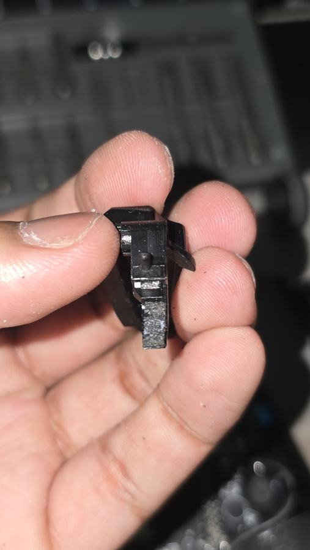
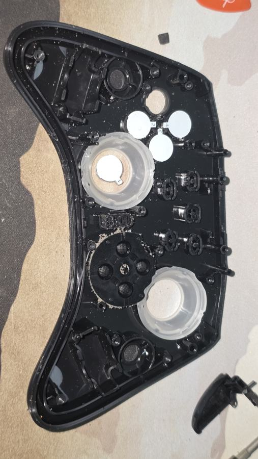
A and B
The face buttons sit on a clear silicone membrane. Under each dome are two black pads made of conductive carbon. When you press a button, the pads bridge two sets of gold contacts on the board, and the controller sees the press. On the A and B domes the pads had worn away, leaving only a dark residue. The buttons still moved, but nothing connected.
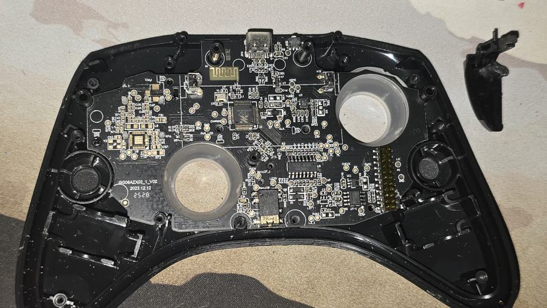
Parts from around the house
I had no replacement parts. The good news was that none of these faults were electronic. The bumpers needed something to fill a gap, and the domes needed something that conducts. Both were already in the house.
Bumpers: foam tape and a wire bump
I had some double-sided foam tape left over, which is close to what the original pads were made of. I cut small pieces to replace the missing foam. For the switch that had worn flat, I glued a tiny coil of bare copper wire on top, so the bumper has something to press again.
- Scrape the crumbled foam off the bumper arm with a toothpick.
- Cut a piece of foam tape to the size of the old pad and stick it in the same place.
- If a switch has worn flat, wind a tiny coil of bare wire and glue it to the top of the switch to rebuild the nub.
- Test before you close the controller. If the button reads as always pressed, trim the foam. If it doesn't click, add another layer.
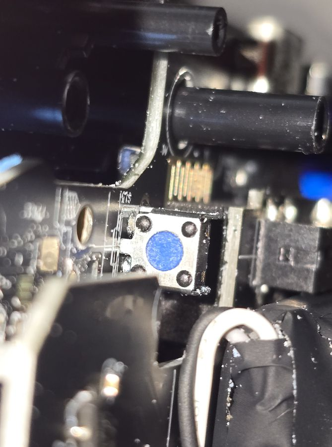
The nub is worn flat.
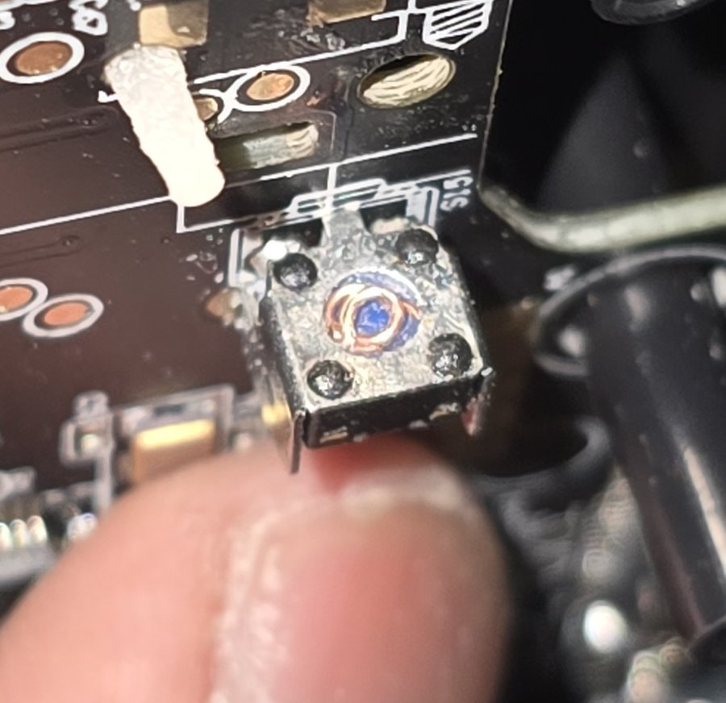
A small copper coil glued on as a new nub.
A and B: copper wire spirals
The pads only have to conduct. I had some bare copper wire, so I wound it into small flat spirals around a toothpick. I used the same toothpick to dab superglue onto each dome and set two spirals per button, where the old pads had been.
- Lift off the silicone membrane. Clean the gold contacts on the board with isopropyl alcohol.
- Wind bare copper wire around the tip of a toothpick into a tight, flat spiral about the size of one pad. Slide it off and cut the tail.
- Press the spiral as flat as you can.
- Put a tiny dot of superglue on the dome with the toothpick and set the spiral on it. Keep glue off the copper face, or it won't conduct.
- Make two spirals per dome, matching the original pads, then repeat for the other button.
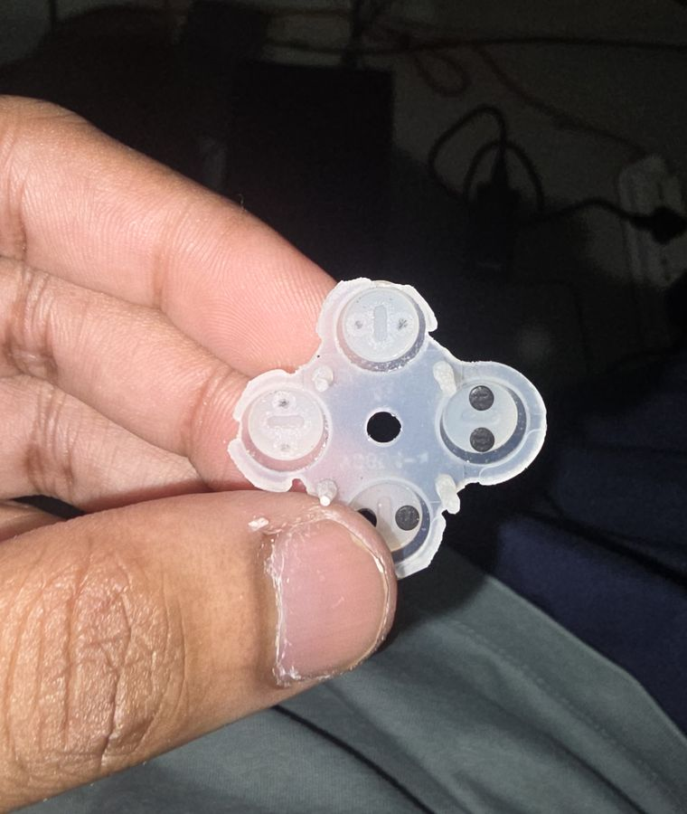
Two domes still have black pads. A and B have only residue.
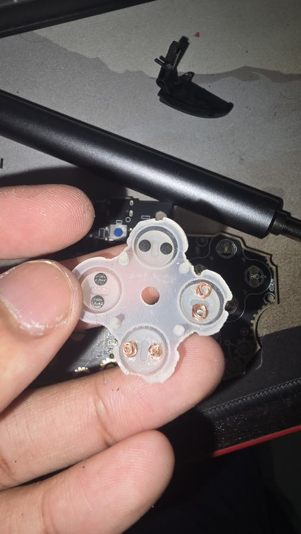
Copper spirals on A and B.
All four buttons work again
LB, RB, A and B all register again.
I tested every button in the gamepad tester with the controller still open, then again after closing it. Every input showed up, including the four repaired ones.
For a first real fix, done with tape, wire and a toothpick, I'll take it.
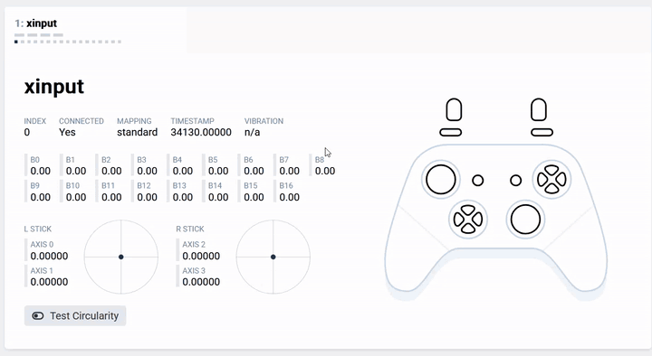
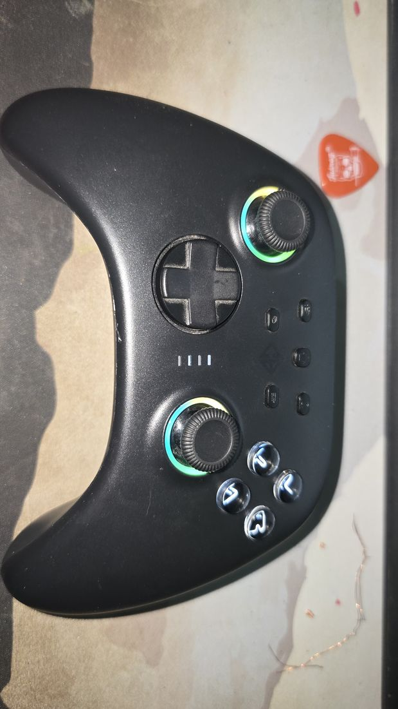
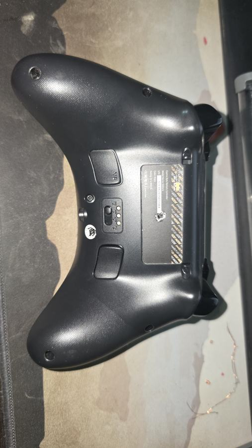
It's a stopgap, not a factory-grade repair. Superglue doesn't bond well to silicone, so the spirals may peel or shift over time. The proper fix for A and B is a set of replacement conductive carbon pads, which are sold for remote-control repair and stick on in the same way.
What to watch for
Bare wire only
Enamelled wire from motors or speakers is coated with insulation and won't conduct. Scrape a test piece, or use plain bare copper.
Keep spirals inside their dome
If a spiral reaches a neighbouring button's contacts, it can trigger the wrong button.
Nothing on the gold contacts
Never put glue or solder on the board's contacts. Clean them with alcohol and leave them bare.
Check the grip weights
The weights in the handles sit in the same foam. While you're inside, check it hasn't started to crumble too.
Taking a Stellaris apart
Tools
- Small Phillips screwdriver
- Plastic pry tool or guitar pick
- Toothpicks
- Isopropyl alcohol and cotton swabs
- Bare copper wire
- Superglue
- Double-sided foam tape
- A browser gamepad tester
Opening it
- Switch the controller off and unplug the USB cable.
- Remove the six back-shell screws: two at the ends of the grips, two on the shoulders, and two below the M1 and M2 paddles.
- Pry the shells apart at the grips with a plastic tool. If it resists, a screw is still in.
- Lift the back half away. Nothing inside needs unplugging: the boards and the battery stay connected the whole time.
- Remove the two trigger screws just below the bumpers. Lift out the triggers, the top trim and the bumpers. The bumpers have no screws of their own.
- Remove the three marked screws on the battery board and lift it up and to the side, still connected. The battery and the stick modules come with it.
- Remove the three marked screws on the main board and lift it off the membranes.
- The membranes and button caps now lift straight out of the front shell.
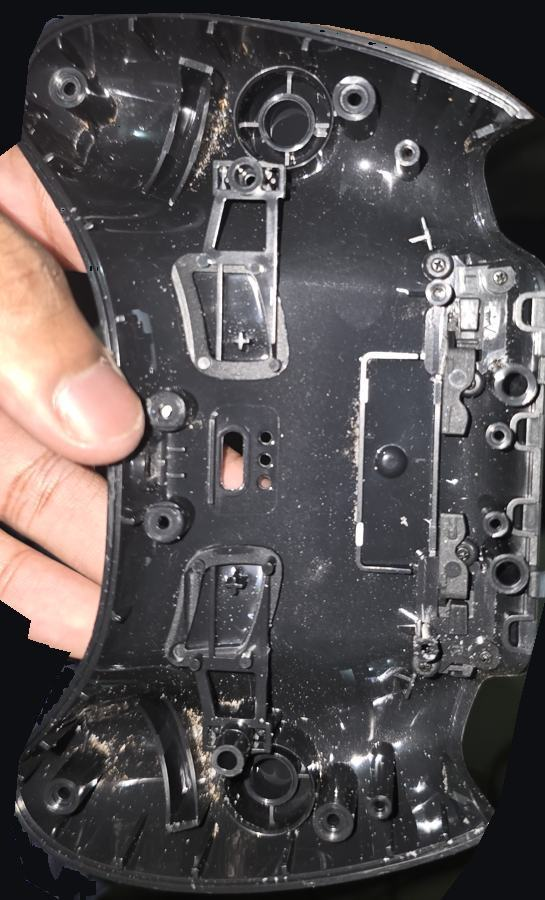
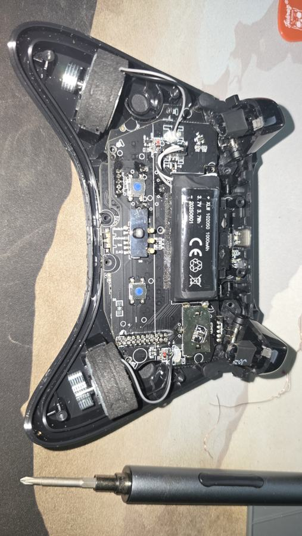
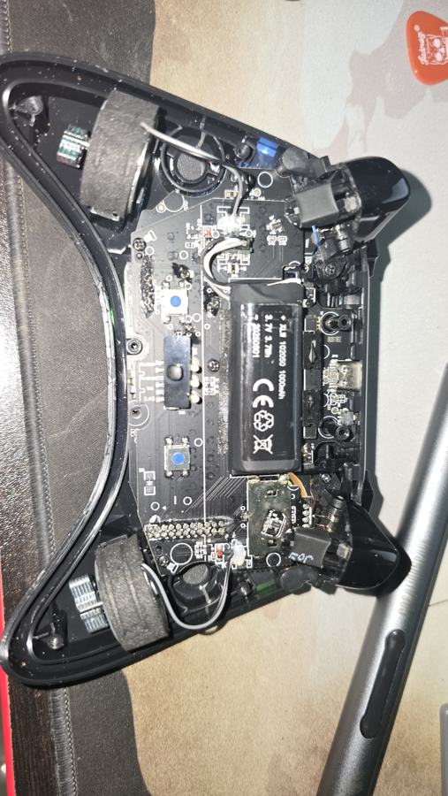
Putting it back together
- Fit the caps and membranes into the front shell, then the main board and its three screws.
- Lay the battery board back in place and refit its three screws.
- Seat the grip weights in their foam.
- Fit the bumpers, top trim and triggers, then the two trigger screws.
- Press the power button next to the USB-C port and test every button while the controller is still open.
- Close the shell, refit the six screws and test once more.
Reactions and comments
Fixed yours a different way? Leave a reaction or a comment below. You need a GitHub account; comments are stored as GitHub Discussions on this site's repository.